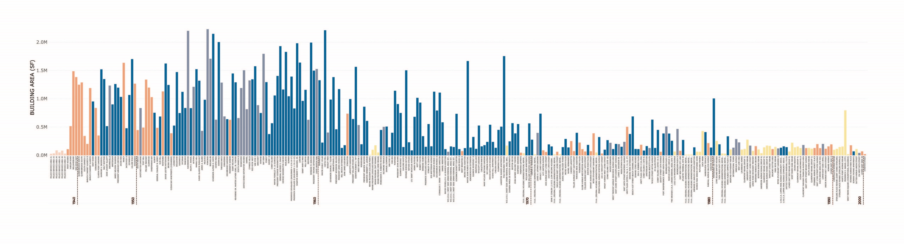
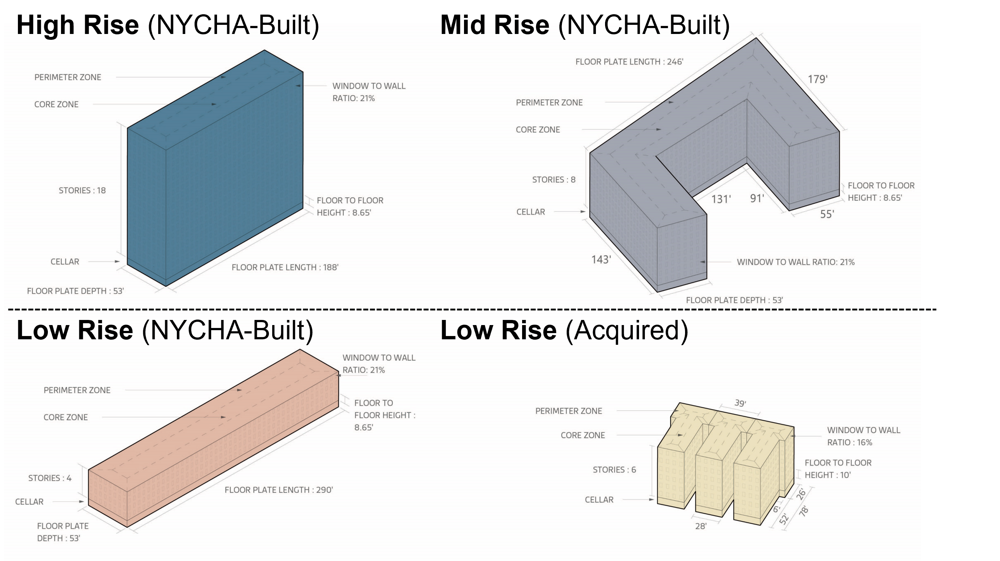
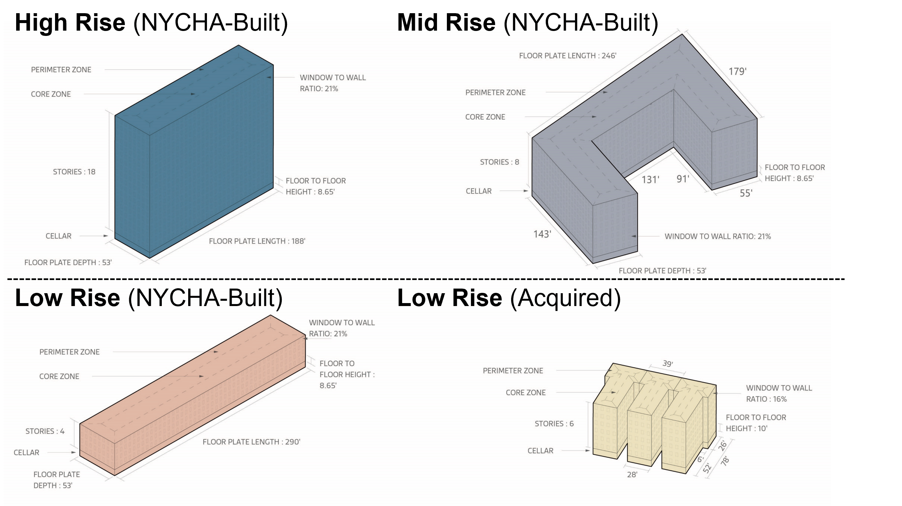
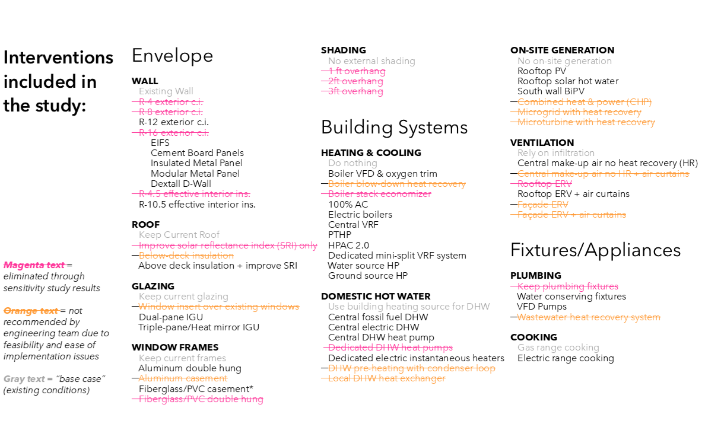
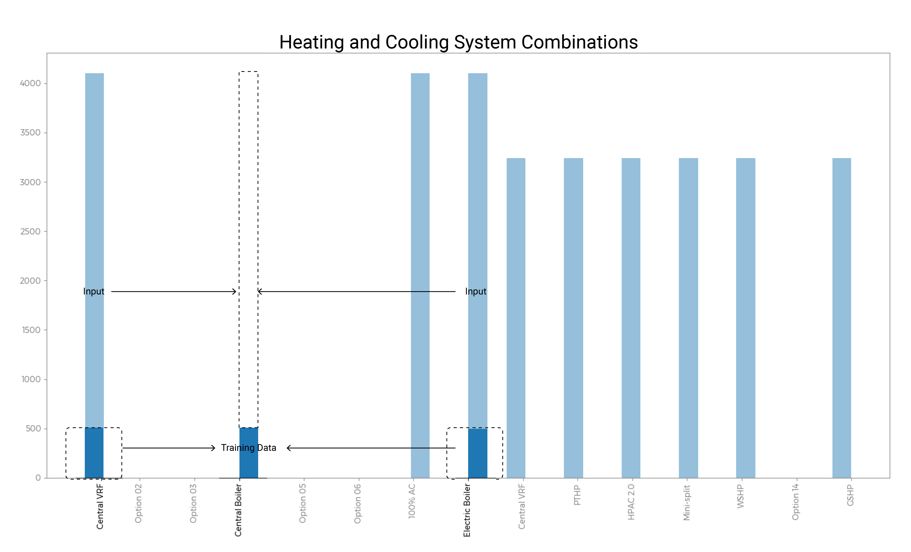
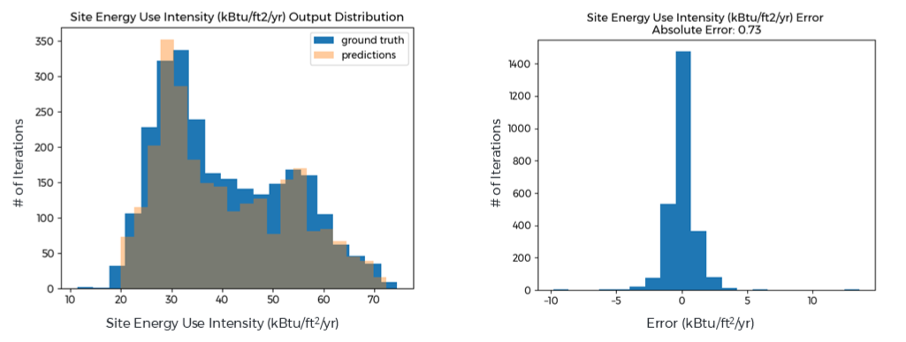
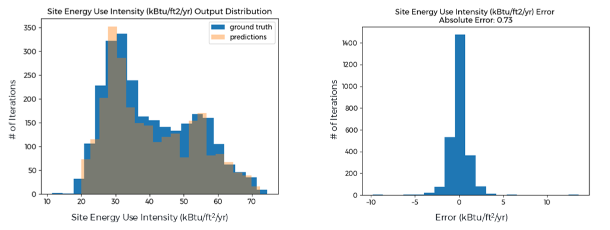
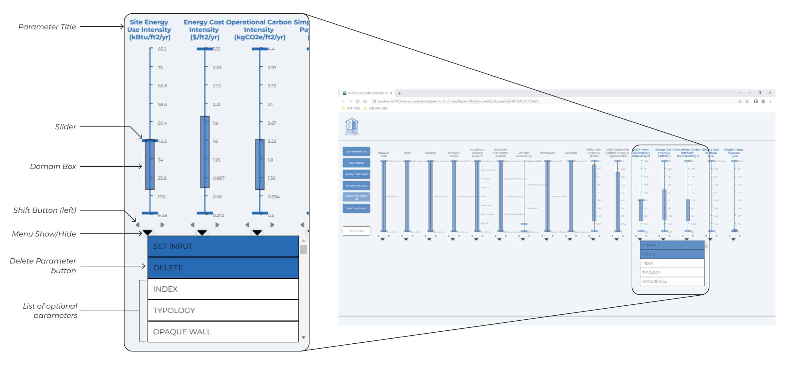

NYCHA ANALYSIS
NYCHA needed a playbook to guide renovation projects on their portfolio of over 300 assets. Building individual energy models for each property was not feasible, so instead, we analyzed NYCHA's portfolio data to identify four meaningful typologies, parameterized them, built a simulation pipeline that included random forest models to analyze over 60K different energy conservation measure combinations (ECMs), and created a new web application for navigating the results.



In conjunction with Marvel Architects, we analyzed NYCHA's portfolio data to identify four meaningful typologies. Of those typologies we narrowed down the
scope to two that would effectively cover most retrofit scenarios.

After an initial review of ECMs that were relevant to their portfolio, the total number of unique ECM combinations was in the billions, so we
worked with MEP engineers and NYCHA architects to narrow down the total number of ECMs that were more realistic.



We trained random forest models on subsets of our simulation results to improve our simulation capacity. For instance, we paired every simulation that included
an electric boiler with the corresponding simulation that used a Central VRF system. Then, we used the electric boiler and VRF system results to predict
the simulation results for the same iteration using central gas boiler.

After running all the simulations, the challenge was to create a meaningful way to navigate a complex dataset of 60K entries with over 40 variables.
Rather than handing over a large Excel sheet, and leaving data navigation to the client, I decided to build a web app based on a parallel coordinate system
that enables users to arrive to as few as 1 specific ECM combination from 60,000 based on their budget, ecm restrictions, and performance targets.
One of the weaknesses of a parallel coordinates graph is the lack of clarity and the difficulty in figuring out which variable to filter out next.
The sensitivity factor and our applications ability to hide and reveal the graph lines help address these challenges.
In the video the user eliminates the ECMs they cannot use, sets their budget, sets their performance target, uses the sensitivity metric to determine
which variable to filter out, and finally reveals the individual lines once they've narrowed down the dataset.